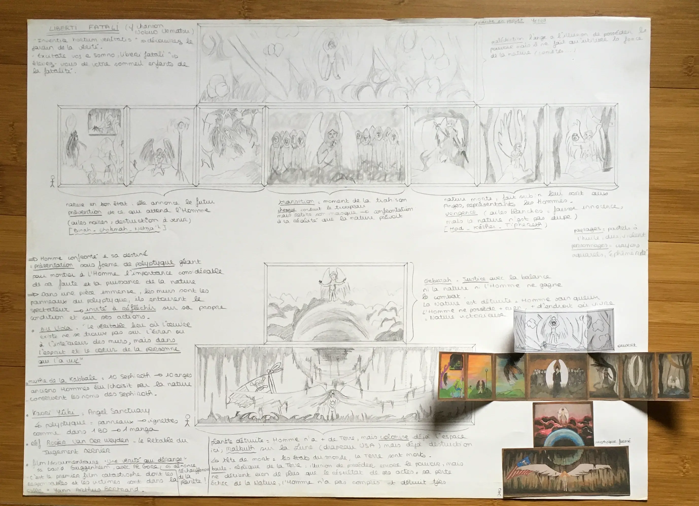
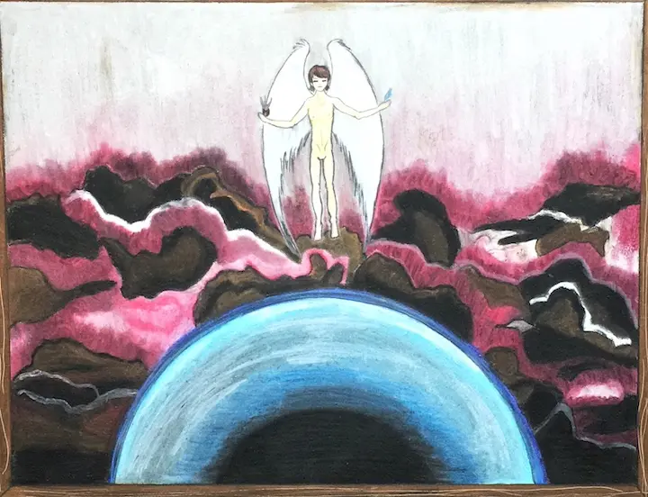
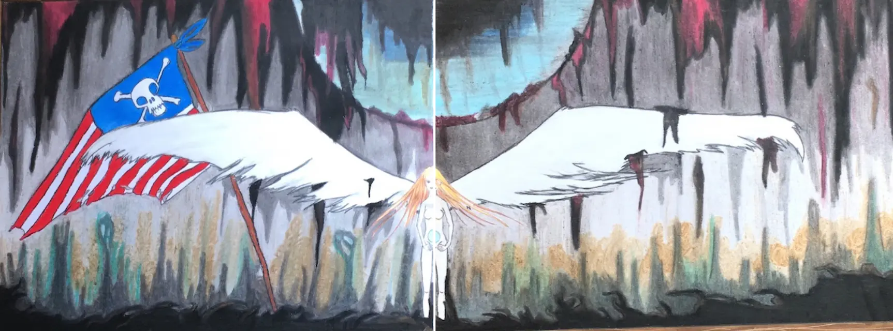

Dessins du passé
J’ai fait du rangement dans la maison. Pour faire un peu de place, j’ai décidé de me séparer des dessins et toiles réalisés lorsque j’étais au lycée. Surtout les plus grands. Je m’occuperai des petits formats plus tard. Je les ai tout de même photographier, histoire d’en garder une petite trace.
Cette toile représente sans doute un personnage d’animé que j’appréciais à l’époque. Je ne sais plus. J’ai eu ma période « anges ». J’aime bien ses couleurs et l’impression de fragilité que dégage le sujet.
Nul mystère ici. Il s’agit d’une composition de personnages de certains de mes films d’animation préférés du Studio Ghibli : Mon voisin Totoro, Princesse Mononoké et Le voyage de Chihiro.
Bon, j’ai eu ma période Naruto aussi.
Pas grand chose à dire sur ces toiles-ci. Acrylique ou peinture à l’huile, toujours. Et manque cruel de détails et de talents quand il n’y a pas de modèle à suivre (sur celle du milieu, s’il était utile de préciser…).
Quelques dessins vite faits au crayon, souvent dans les marges de mes cahiers, sans modèle si ce n’est les personnes que je cotoyais tous les jours.

Quelques dessins un peu plus travaillés, avec modèle évidemment, format raisin pour la plupart :

Certains sont très sympas, même s’ils manquent un peu de contraste à cause du rendu de la photo. D’autres sont complètement déprimants et assez mauvais. Ça a été bizarre de revoir tout ça et, parfois, de me rappeler les circonstances dans lesquelles ils ont été réalisés.
Les suivants ont été réalisés dans le cadre de l’option Arts Plastiques, au lycée. Je ne sais plus trop quels étaient les sujets, comme celui-ci :
Ou celui-ci :
Il y en a un, qui comptait pour le BAC, qui était de créer un polyptique en s’inspirant d’artistes qui avaient fait de même. Voici la série :
Le premier est la planche explicative, avec les associations des différents dessins à faire et les références.
L’intérieur du polyptique n’a pas été achevé. Il manque la planche du haut. Les autres s’enchaînent.
Lorsque le polyptique est fermé, il ressemble à ça :
 Voilà, j’ai fait le tour. Il y a pas mal de bizzareries là-dedans, mais ça fait plaisir de les revoir et de les garder en mémoire.
Aller, un petit plaisir, pour la fin !